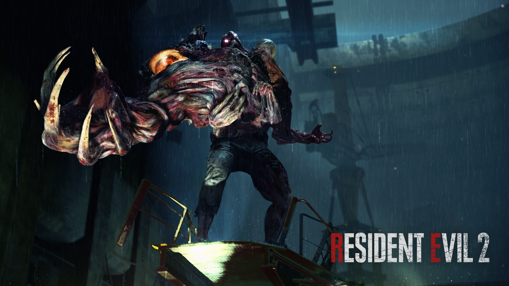
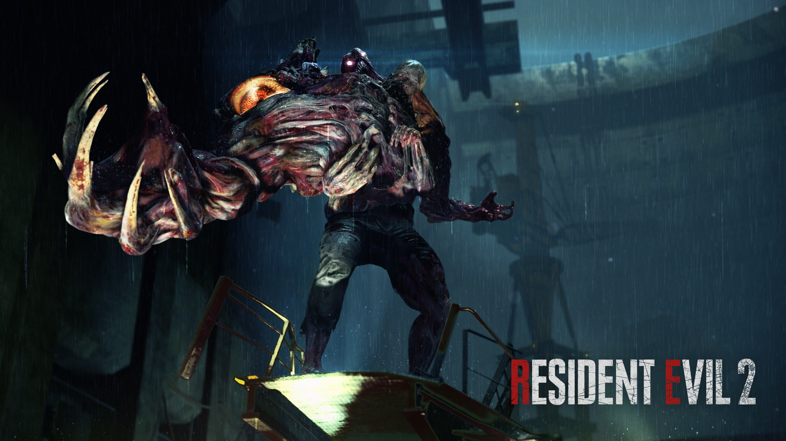

.png)
Vinte anos depois, Resident Evil 2 Remake nos leva de volta ao pesadelo vivido por Claire Redfield e Leon S. Kennedy em Raccoon City, agora com níveis de imersão nunca vistos antes.
Como no aclamado Resident Evil 7. Utilizando da RE Engine, a Capcom dá um novo estilo fotorrealista ao jogo, trazendo personagens mais humanos, hordas de zumbis horripilantes e muito gore.
Desta vez, as criaturas reagem em tempo real à medida que recebem danos. A iluminação impressionante também dá vida aos cenários e corredores familiares do Departamento de Polícia de Raccoon City.
Os jogadores se sentirão no lugar dos heróis, ansiosos para fugir da escuridão por medo dos monstros carnívoros que nela os aguardam.
A reação da imprensa e dos fãs ao Resident Evil 2 Remake quando dissemos ‘We Do It’ em 2015 foi impressionante”, disse o produtor Yoshiaki Hirabayashi. “Queremos que os fãs vejam que a releitura de Resident Evil 2 não apenas captura a magia do original que os fãs tanto amam, mas também o expande para proporcionar uma experiência mais rica.
Resident Evil 2 Remake foi lançado para PlayStation 4, Xbox One e PC (Steam) em janeiro de 2019. Todas as versões têm menus e opção de legendas em português do Brasil.
Principais Personagens

Leon S.Kennedy
Leon S.kennedy Um policial novato que foi designado para Raccoon City. Antes de iniciar seu trabalho, Leon estava em casa a espera de suas ordens. Depois de ninguém entrar em contato e notando que algo estava errado, ele então seguiu para a delegacia. Dias mais tarde, depois de chegar na cidade, sua vida mudou para sempre.

claire Redfild
Claire redfild Claire é uma estudante universitária que foi até Raccoon City para confirmar a segurança de seu irmão, Chris Redfield. Chegando a cidade, a jovem se vê dentro de um pesadelo, tendo que lutar para sobreviver.

Ada Wong
Ada Wong Uma misteriosa mulher que Leon conheceu durante o incidente. Seu comportamento parece ser de uma agente treinada, mas seu propósito e antecedentes são desconhecidos.